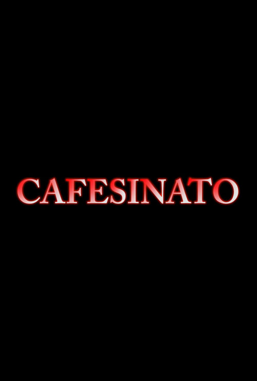

Cafesinato
2016

Sinopsis
Un detective investiga la muerte de 2 ciudadanos.
Ficha Técnica
- Dirección: Felipe Hernández
- Guion: Claudia Barriguete, Natalia Molinero
- Reparto :Asier Rammirez, Irene De la Vera, Natalia Molinero, Clauda Barriguete, Lucía Gonzalo, Juan Martín, Lucía de Gonzalo, David De la Vera, Gorka García, Pedro Rebollo, Alejandra Vázquez, Claudia Carpintero, Andrés Panadero, Víctor Beas.
- Producción: Pedro Rebollo, Gorka García
- Montaje: Fernando Corral
- Fotografía : Noelia Arenas
- Sonido: Pedro López
- Música: www.jamendo.com
- Ayte. Dirección: Sofía Cayetana
- Formato de rodaje: HD, 24fps (BMPCC) | 2.35
- Ópticas: Lumix 14mm f/2.8
- Software usado:Adobe Premiere Pro
- Duración: 2 minutos 21 segundos